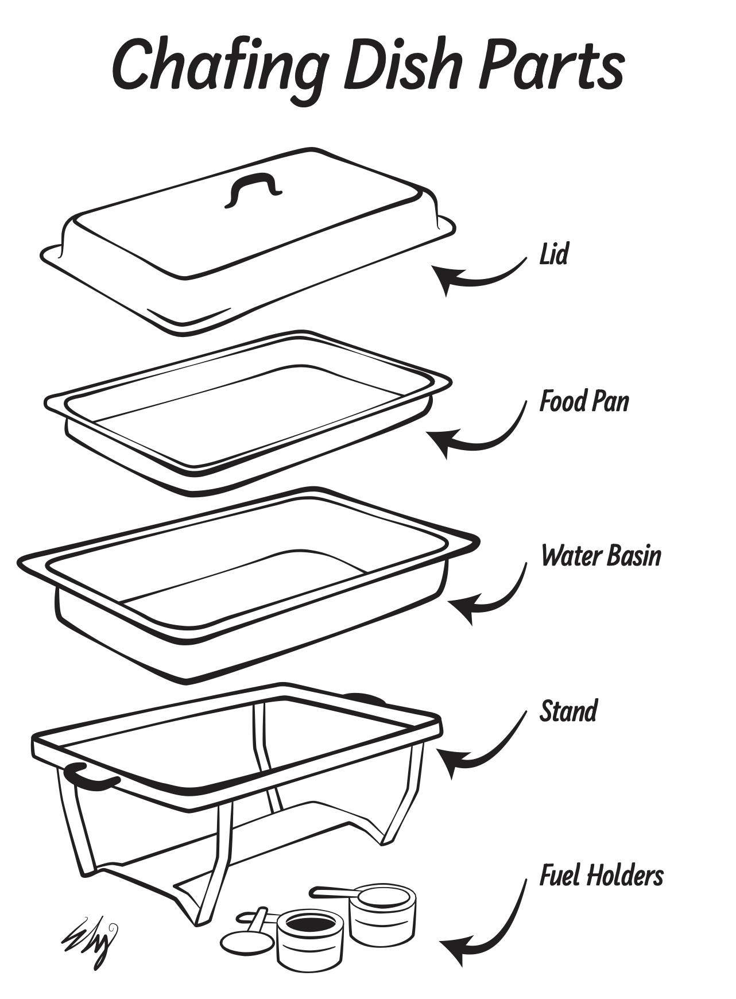
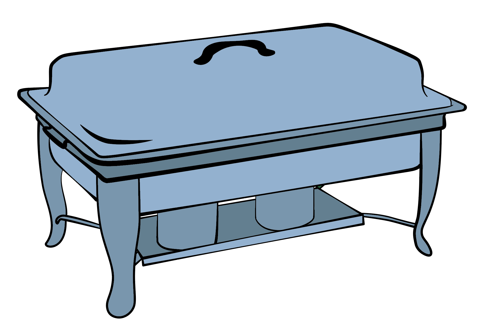

I made this in Graphic Design 3 as part of my client work for my school's cooking class. The general brief for this was to have a diagram of a chafing dish with the ability to label the components. My first iteration had colors and had all the parts colored. After showing the version to the client they said they liked the style but wanted the parts separate and didnt want it colored. After going back to the drawing board I made the version you see below.
The project helped me learn to trace reference material without loosing creativity, I got to play around a lot with line width and have simplicity while staying readable.

